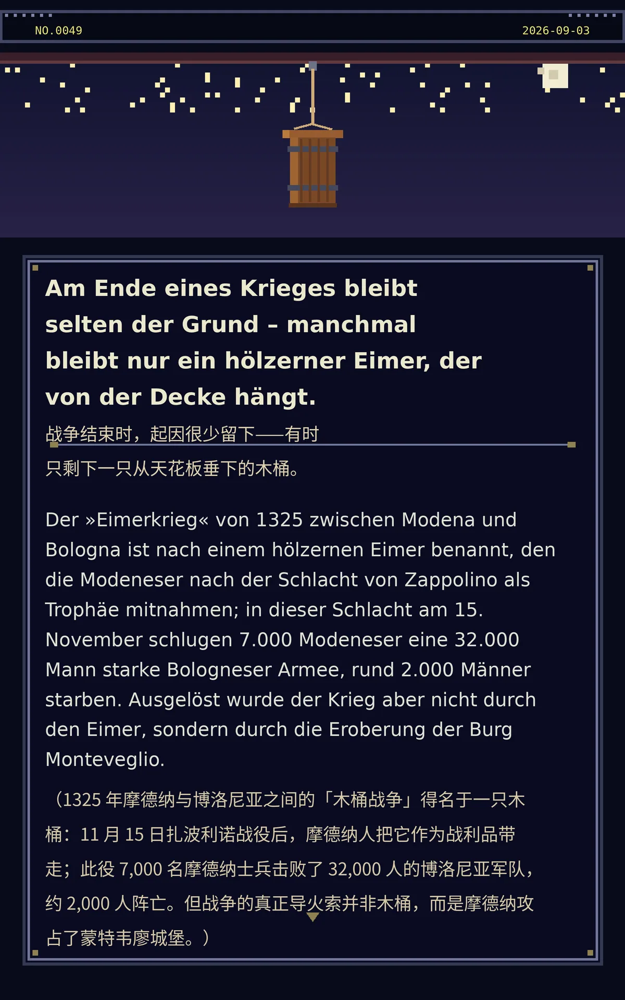

Am Ende eines Krieges bleibt selten der Grund – manchmal bleibt nur ein hölzerner Eimer, der von der Decke hängt.
Der »Eimerkrieg« von 1325 zwischen Modena und Bologna ist nach einem hölzernen Eimer benannt, den die Modeneser nach der Schlacht von Zappolino als Trophäe mitnahmen; in dieser Schlacht am 15. November schlugen 7.000 Modeneser eine 32.000 Mann starke Bologneser Armee, rund 2.000 Männer starben. Ausgelöst wurde der Krieg aber nicht durch den Eimer, sondern durch die Eroberung der Burg Monteveglio.（1325 年摩德纳与博洛尼亚之间的「木桶战争」得名于一只木桶：11 月 15 日扎波利诺战役后，摩德纳人把它作为战利品带走；此役 7,000 名摩德纳士兵击败了 32,000 人的博洛尼亚军队，约 2,000 人阵亡。但战争的真正导火索并非木桶，而是摩德纳攻占了蒙特韦廖城堡。）
a307abda487cd1b463329ccb945ce396d8d38d529227f98c冷知识由执笔的模型自行查证。逐条断言、来源与所引原句存档在纯文字副本里，未经程序逐字校验，留作事后核实。